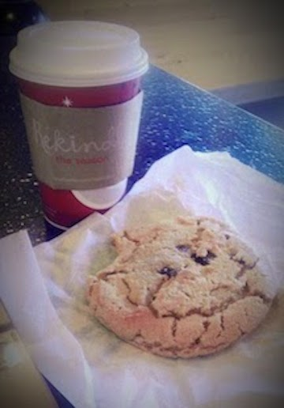

Amelia's Love to Quirk
Picking out one thing that I am particularly fond of is a surprisingly more difficult task than I thought it might be. There are so many things I could choose from. I love summer festivals in Chicago, I have a deep connection with hummus, and I love music, which I recently found out is something that not everyone loves (I've only met one, but a friend recently actually told me, "I don't like music." Who knew?).
While there are many things I could say I love, what quirk can I share? Then it hit me. I have one true obsession that has led to a bit of a quirk.
CHOCOLATE CHIP COOKIES!!
(Can you hear the angels singing?)

My Love
Yes, dear friends, nothing beats a good chocolate chip cookie. It is my brain food. Yeah, yeah, it's supposed to be something like whole grains, fish, or kale. If I'm going to sit and stress my brain for a few hours, I need coffee and a cookie.

My Quirk
For as long as I can remember, I've always had a giant chocolate chip cookie for my birthday instead of cake. The bigger, the better. I've decided I don't like the colored frosting, though. Next year, just chocoloate frosting!